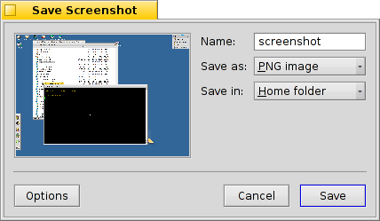
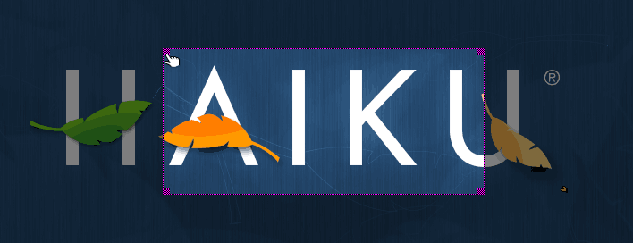

Screenshot
| Barra de escritorio: | ||
| Ubicación: | /boot/system/apps/Screenshot /bin/screenshot | |
| Configuraciones: | ~/config/settings/screenshot |
Las capturas de pantallan se toman ya sea con la aplicación Captura de Pantalla o presionando la tecla Impr Pant,

To the right of the preview at the top, you can switch between different modes and options:
Either opt for the , or just the (provided there is one at the time you take the screenshot). If you just want to capture only a part of the screen, click under the preview (see below). Once selected, the mode is enabled and you can now switch between , , and .
Besides these modes, you can also decide to and .
Debajo de eso, puede definir el nombre, formato y ubicación que se usará para la captura de pantalla cuando haga clic en el botón . En vez de guardar el archivo a disco también puede decidir para poder pegar la captura directamente en otra aplicación, o tomar una .
Todos los ajustes serán recordados la próxima vez que tome una captura, permitiéndole usar las siguientes combinaciones de teclado:
| Toma una captura de pantalla sin ninguna demora e inicia el panel de Captura de Pantalla. | ||
| MAYÚSCULAS PRINT | Toma una captura de pantalla de manera silenciosa (sin abrir el panel), pero respetando los ajustes anteriores. | |
| CTRL PRINT | También toma una captura de pantalla de manera silenciosa con los ajustes guardados, pero en vez de guardarlo como un archivo, se copia al portapapeles. | |
| OPT PRINT | Takes a screenshot with zero delay and enters the Select area mode right away. |
 Selecting an area
Selecting an area
When you click , the window of the Screenshot app is hidden, and you'll see the whole screen slightly darkened.

You can now define a selection box that'll highlight the screenshot area. Done with the left mouse button, the area is applied as soon as you lift your finger from the button and the Screenshot window pops up again.
If you create the selection box while holding SHIFT or with the right mouse button, the box will have handles at the corners that'll let you resize the selection. You can also drag the selection box around.
The selection is applied with a double-click or by pressing ENTER.
ESC cancels the selecting process.
Tomar una captura de pantalla desde la Terminal
Hay una aplicación especial screenshot que se puede usar desde la Terminal o un script.
Screenshot --help muestra las opciones familiarizadas como parámetros:
~> screenshot --help
screenshot [OPTIONS] [FILE] Creates a bitmap of the current screen
FILE is the optional output path / filename used in silent mode. An exisiting
file with the same name will be overwritten without warning. If FILE is not
given the screenshot will be saved to a file with the default filename in the
user's home directory.
OPTIONS
-m, --mouse-pointer Include the mouse pointer
-b, --border Include the window border
-w, --window Capture the active window instead of the entire screen
-d, --delay=seconds Take screenshot after the specified delay [in seconds]
-s, --silent Saves the screenshot without showing the application
window
-f, --format=image Give the image format you like to save as
[bmp], [gif], [jpg], [png], [ppm], [tga], [tif]
-c, --clipboard Copies the screenshot to the system clipboard without
showing the application window
-a, --area Select an area of the screen to capture
Note:
Option -b, --border takes only effect when used with -w, --window
Option -a, --area does not take effect with -s, --silent or -c, --clipboard